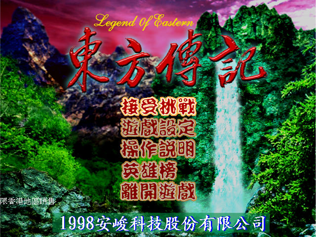
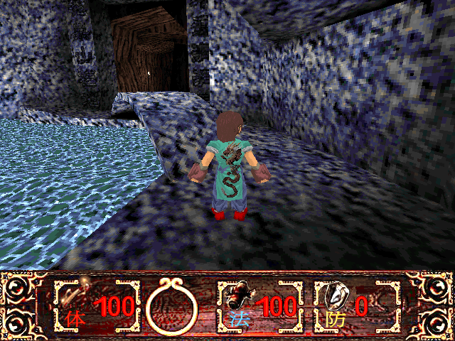

名稱：東方傳記／東方傳說／東方遊記 (Legend of Eastern，中文版) 簡介：安峻1998年出品的動作遊戲 [待補]。

保護：無，放入光碟才有背景音樂。 檔案：E_PATCH101B.rar = 1.01b更新檔 秘技： ENGINEGOD = 無敵 ENGINEKEY = 取得所有鑰匙 ENGINEBOOK = 取得所有魔法 操作： 上下 = 前進／後退 左右 = 左右轉 Shift+左右 = 平移 Space = 跳躍 Ctrl = 攻擊 C = 切換攻擊方式 Enter = 使用物品 CapsLock = 跑步模式開關 PgUp/PgDn = 上下看 Home = 恢復視角 F11 = 調整亮度 +/- = 調整視窗大小 Esc = 開啟主選單